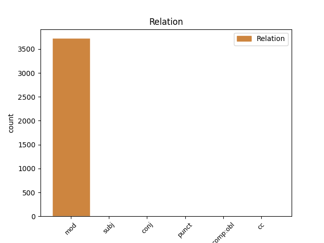
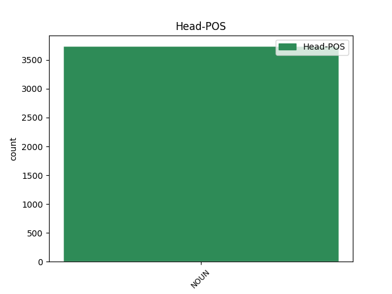
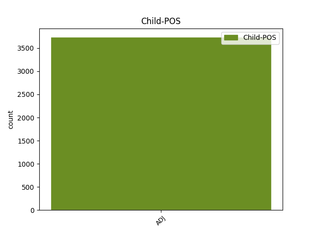

Distribution of features within this leaf



Agreement Rules sorted by frequency.
- When the dependent token is the modifer(mod) of the head token, and the head token is NOUN and the dependent token is ADJ.
1 ایڈمرل _ _ _ _ 0 _ _ _
2 مولن _ _ _ _ 0 _ _ _
3 نے _ _ _ _ 0 _ _ _
4 امریکہ _ _ _ _ 0 _ _ _
5 کی _ _ _ _ 0 _ _ _
6 جانب _ _ _ _ 0 _ _ _
7 سے _ _ _ _ 0 _ _ _
8 اعتماد _ _ _ _ 0 _ _ _
9 کے _ _ _ _ 0 _ _ _
10 فقدان _ _ _ _ 0 _ _ _
11 پر _ _ _ _ 0 _ _ _
12 بات _ _ _ _ 0 _ _ _
13 کرتے _ _ _ _ 0 _ _ _
14 ہوئے _ _ _ _ 0 _ _ _
15 کہا _ _ _ _ 0 _ _ _
16 کہ _ _ _ _ 0 _ _ _
17 آئی _ _ _ _ 0 _ _ _
18 ایس _ _ _ _ 0 _ _ _
19 آئی _ _ _ _ 0 _ _ _
20 کے _ _ _ _ 0 _ _ _
21 بعض بعض ADJ JJ Case=Nom 22 mod _ ChunkId=NP7|ChunkType=child
22 عناصر عنصر NOUN NN Case=Nom|Gender=Masc|Number=Plur|Person=3 0 _ _ _
23 حقانی _ _ _ _ 0 _ _ _
24 نیٹورک _ _ _ _ 0 _ _ _
25 کی _ _ _ _ 0 _ _ _
26 مدد _ _ _ _ 0 _ _ _
27 کر _ _ _ _ 0 _ _ _
28 رہے _ _ _ _ 0 _ _ _
29 ہےں _ _ _ _ 0 _ _ _
30 ۔ _ _ _ _ 0 _ _ _
1 ایران _ _ _ _ 0 _ _ _
2 , _ _ _ _ 0 _ _ _
3 پاکستان _ _ _ _ 0 _ _ _
4 اور _ _ _ _ 0 _ _ _
5 افغانستان _ _ _ _ 0 _ _ _
6 کے _ _ _ _ 0 _ _ _
7 صدور _ _ _ _ 0 _ _ _
8 نے _ _ _ _ 0 _ _ _
9 تہران _ _ _ _ 0 _ _ _
10 میں _ _ _ _ 0 _ _ _
11 منعقدہ _ _ _ _ 0 _ _ _
12 ایک _ _ _ _ 0 _ _ _
13 سہ_فریقی _ _ _ _ 0 _ _ _
14 چوٹی _ _ _ _ 0 _ _ _
15 کانفرنس _ _ _ _ 0 _ _ _
16 میں _ _ _ _ 0 _ _ _
17 انتہا_پسندی _ _ _ _ 0 _ _ _
18 و _ _ _ _ 0 _ _ _
19 دہشت_گردی _ _ _ _ 0 _ _ _
20 , _ _ _ _ 0 _ _ _
21 منشیات _ _ _ _ 0 _ _ _
22 کی _ _ _ _ 0 _ _ _
23 اسمگلنگ _ _ _ _ 0 _ _ _
24 اور _ _ _ _ 0 _ _ _
25 غیر_اخلاقی _ _ _ _ 0 _ _ _
26 انسانی _ _ _ _ 0 _ _ _
27 تجارت _ _ _ _ 0 _ _ _
28 کے _ _ _ _ 0 _ _ _
29 علاوہ _ _ _ _ 0 _ _ _
30 علاقائی _ _ _ _ 0 _ _ _
31 صیانتی _ _ _ _ 0 _ _ _
32 مسائل _ _ _ _ 0 _ _ _
33 اور _ _ _ _ 0 _ _ _
34 افغانستان _ _ _ _ 0 _ _ _
35 کی _ _ _ _ 0 _ _ _
36 تعمیر تعمیر NOUN NN Case=Acc|Gender=Masc|Number=Sing|Person=3 0 _ _ _
37 نو نو ADJ JJ Case=Acc|Gender=Masc|Number=Sing|Person=3 36 subj _ ChunkId=JJP2|ChunkType=head|Tam=0|Vib=ْ
38 پر _ _ _ _ 0 _ _ _
39 تبادلہ_خیال _ _ _ _ 0 _ _ _
40 کیا _ _ _ _ 0 _ _ _
41 تھا _ _ _ _ 0 _ _ _
42 - _ _ _ _ 0 _ _ _
1 مسلم _ _ _ _ 0 _ _ _
2 کمیونٹی _ _ _ _ 0 _ _ _
3 ورکرس _ _ _ _ 0 _ _ _
4 نے _ _ _ _ 0 _ _ _
5 m15 _ _ _ _ 0 _ _ _
6 پر _ _ _ _ 0 _ _ _
7 انھیں _ _ _ _ 0 _ _ _
8 بلیک_میل بلیک_میل NOUN NN Case=Acc|Gender=Masc|Number=Sing|Person=3 0 _ _ _
9 اور _ _ _ _ 0 _ _ _
10 ہراساں ہراساں ADJ JJ Case=Acc 8 conj _ ChunkId=JJP|ChunkType=head
11 کرنے _ _ _ _ 0 _ _ _
12 کا _ _ _ _ 0 _ _ _
13 الزام _ _ _ _ 0 _ _ _
14 عائد _ _ _ _ 0 _ _ _
15 کیا _ _ _ _ 0 _ _ _
16 ہے _ _ _ _ 0 _ _ _
17 کہ _ _ _ _ 0 _ _ _
18 سکیورٹی _ _ _ _ 0 _ _ _
19 سرویس _ _ _ _ 0 _ _ _
20 کے _ _ _ _ 0 _ _ _
21 لیے _ _ _ _ 0 _ _ _
22 کام _ _ _ _ 0 _ _ _
23 کریں _ _ _ _ 0 _ _ _
24 یا _ _ _ _ 0 _ _ _
25 برطانیہ _ _ _ _ 0 _ _ _
26 اور _ _ _ _ 0 _ _ _
27 سمندرپار _ _ _ _ 0 _ _ _
28 دیگر _ _ _ _ 0 _ _ _
29 مقامات _ _ _ _ 0 _ _ _
30 پر _ _ _ _ 0 _ _ _
31 محروسی _ _ _ _ 0 _ _ _
32 کا _ _ _ _ 0 _ _ _
33 سامنا _ _ _ _ 0 _ _ _
34 کریں _ _ _ _ 0 _ _ _
35 ۔ _ _ _ _ 0 _ _ _
1 انتقال _ _ _ _ 0 _ _ _
2 کے _ _ _ _ 0 _ _ _
3 بعد _ _ _ _ 0 _ _ _
4 سلطان _ _ _ _ 0 _ _ _
5 ترکی _ _ _ _ 0 _ _ _
6 نے _ _ _ _ 0 _ _ _
7 انھیں _ _ _ _ 0 _ _ _
8 شایان _ _ _ _ 0 _ _ _
9 شان شان ADJ JJ Case=Acc|Gender=Masc|Number=Sing|Person=3 11 comp:obl _ ChunkId=NP4|ChunkType=child|Tam=0|Vib=0
10 خراج _ _ _ _ 0 _ _ _
11 عقیدت عقیدت NOUN NN Case=Acc|Gender=Masc|Number=Sing|Person=3 0 _ _ _
12 پیش _ _ _ _ 0 _ _ _
13 کرنے _ _ _ _ 0 _ _ _
14 کے _ _ _ _ 0 _ _ _
15 لیے _ _ _ _ 0 _ _ _
16 درہ _ _ _ _ 0 _ _ _
17 دانیال _ _ _ _ 0 _ _ _
18 مےں _ _ _ _ 0 _ _ _
19 شاخ _ _ _ _ 0 _ _ _
20 زریں _ _ _ _ 0 _ _ _
21 کے _ _ _ _ 0 _ _ _
22 سرے _ _ _ _ 0 _ _ _
23 پر _ _ _ _ 0 _ _ _
24 بکشطاش _ _ _ _ 0 _ _ _
25 مےں _ _ _ _ 0 _ _ _
26 سمندر _ _ _ _ 0 _ _ _
27 کے _ _ _ _ 0 _ _ _
28 کنارے _ _ _ _ 0 _ _ _
29 ان _ _ _ _ 0 _ _ _
30 کا _ _ _ _ 0 _ _ _
31 مزار _ _ _ _ 0 _ _ _
32 اس _ _ _ _ 0 _ _ _
33 طرح _ _ _ _ 0 _ _ _
34 بنوایا _ _ _ _ 0 _ _ _
35 کہ _ _ _ _ 0 _ _ _
36 سمندر _ _ _ _ 0 _ _ _
37 کی _ _ _ _ 0 _ _ _
38 لہریں _ _ _ _ 0 _ _ _
39 ہر _ _ _ _ 0 _ _ _
40 وقت _ _ _ _ 0 _ _ _
41 مزار _ _ _ _ 0 _ _ _
42 کی _ _ _ _ 0 _ _ _
43 دیوار _ _ _ _ 0 _ _ _
44 کو _ _ _ _ 0 _ _ _
45 چومتی _ _ _ _ 0 _ _ _
46 اور _ _ _ _ 0 _ _ _
47 خراج _ _ _ _ 0 _ _ _
48 پیش _ _ _ _ 0 _ _ _
49 کرتی _ _ _ _ 0 _ _ _
50 ہےں _ _ _ _ 0 _ _ _
51 ۔ _ _ _ _ 0 _ _ _
1 سب _ _ _ _ 0 _ _ _
2 سے _ _ _ _ 0 _ _ _
3 پہلا phla ADJ QO Case=Nom|Gender=Masc|Number=Sing|NumType=Ord 4 punct _ ChunkId=NP|ChunkType=child
4 حادثہ حادثہ NOUN NN Case=Nom|Gender=Masc|Number=Sing|Person=3 0 _ _ _
5 سال _ _ _ _ 0 _ _ _
6 2005 _ _ _ _ 0 _ _ _
7 ء _ _ _ _ 0 _ _ _
8 مےں _ _ _ _ 0 _ _ _
9 پیش _ _ _ _ 0 _ _ _
10 آیا _ _ _ _ 0 _ _ _
11 تھا _ _ _ _ 0 _ _ _
12 ۔ _ _ _ _ 0 _ _ _
Disagree Examples:
1 نیز _ _ _ _ 0 _ _ _
2 اقلیتی اقلیتی ADJ JJ Case=Nom 4 mod _ ChunkId=NP|ChunkType=child
3 تعلیمی _ _ _ _ 0 _ _ _
4 اداروں ادارہ NOUN NN Case=Acc|Gender=Masc|Number=Plur|Person=3 0 _ _ _
5 کے _ _ _ _ 0 _ _ _
6 حقوق _ _ _ _ 0 _ _ _
7 اور _ _ _ _ 0 _ _ _
8 ان _ _ _ _ 0 _ _ _
9 کی _ _ _ _ 0 _ _ _
10 آزادی _ _ _ _ 0 _ _ _
11 متاثر _ _ _ _ 0 _ _ _
12 ہوتی _ _ _ _ 0 _ _ _
13 ہے _ _ _ _ 0 _ _ _
14 ۔ _ _ _ _ 0 _ _ _
1 میناریٹی میناریٹی ADJ JJ Case=Nom|Gender=Fem|Number=Sing|Person=3 2 mod _ ChunkId=NP|ChunkType=child|Tam=0|Vib=0
2 ویلفیر ویلفیر NOUN NN Case=Acc|Gender=Masc|Number=Sing|Person=3 0 _ _ _
3 قائدین _ _ _ _ 0 _ _ _
4 نے _ _ _ _ 0 _ _ _
5 نومنتخبہ _ _ _ _ 0 _ _ _
6 رکن _ _ _ _ 0 _ _ _
7 پارلیمان _ _ _ _ 0 _ _ _
8 مسٹر _ _ _ _ 0 _ _ _
9 سریش _ _ _ _ 0 _ _ _
10 کمار _ _ _ _ 0 _ _ _
11 شیٹکار _ _ _ _ 0 _ _ _
12 اور _ _ _ _ 0 _ _ _
13 نومنتخبہ _ _ _ _ 0 _ _ _
14 رکن _ _ _ _ 0 _ _ _
15 اسمبلی _ _ _ _ 0 _ _ _
16 مسٹر _ _ _ _ 0 _ _ _
17 پی _ _ _ _ 0 _ _ _
18 کشٹاریڈی _ _ _ _ 0 _ _ _
19 سے _ _ _ _ 0 _ _ _
20 میناریٹیز _ _ _ _ 0 _ _ _
21 کو _ _ _ _ 0 _ _ _
22 درپیش _ _ _ _ 0 _ _ _
23 مسائل _ _ _ _ 0 _ _ _
24 کے _ _ _ _ 0 _ _ _
25 حل _ _ _ _ 0 _ _ _
26 کے _ _ _ _ 0 _ _ _
27 لئے _ _ _ _ 0 _ _ _
28 نیک _ _ _ _ 0 _ _ _
29 تمناوں _ _ _ _ 0 _ _ _
30 کا _ _ _ _ 0 _ _ _
31 اظہار _ _ _ _ 0 _ _ _
32 کیا _ _ _ _ 0 _ _ _
33 ہے _ _ _ _ 0 _ _ _
34 ۔ _ _ _ _ 0 _ _ _
1 پاکستانی پاکستانی ADJ JJ Case=Nom|Number=Sing|Person=3 4 mod _ ChunkId=NP|ChunkType=child|Tam=0|Vib=0
2 ٹی _ _ _ _ 0 _ _ _
3 وی _ _ _ _ 0 _ _ _
4 چینل چینل NOUN NN Case=Acc|Gender=Masc|Number=Sing|Person=3 0 _ _ _
5 جیو _ _ _ _ 0 _ _ _
6 نیوز _ _ _ _ 0 _ _ _
7 کے _ _ _ _ 0 _ _ _
8 بموجب _ _ _ _ 0 _ _ _
9 پاکستان _ _ _ _ 0 _ _ _
10 کرکٹ _ _ _ _ 0 _ _ _
11 بورڈ _ _ _ _ 0 _ _ _
12 ( _ _ _ _ 0 _ _ _
13 پی _ _ _ _ 0 _ _ _
14 سی _ _ _ _ 0 _ _ _
15 بی _ _ _ _ 0 _ _ _
16 ) _ _ _ _ 0 _ _ _
17 کے _ _ _ _ 0 _ _ _
18 سی _ _ _ _ 0 _ _ _
19 او _ _ _ _ 0 _ _ _
20 او _ _ _ _ 0 _ _ _
21 سبحان _ _ _ _ 0 _ _ _
22 احمد _ _ _ _ 0 _ _ _
23 نے _ _ _ _ 0 _ _ _
24 کہا _ _ _ _ 0 _ _ _
25 کہ _ _ _ _ 0 _ _ _
26 بورڈ _ _ _ _ 0 _ _ _
27 آف _ _ _ _ 0 _ _ _
28 کرکٹ _ _ _ _ 0 _ _ _
29 کنٹرول _ _ _ _ 0 _ _ _
30 ان _ _ _ _ 0 _ _ _
31 انڈیا _ _ _ _ 0 _ _ _
32 ( _ _ _ _ 0 _ _ _
33 بی _ _ _ _ 0 _ _ _
34 سی _ _ _ _ 0 _ _ _
35 سی _ _ _ _ 0 _ _ _
36 آئی _ _ _ _ 0 _ _ _
37 ) _ _ _ _ 0 _ _ _
38 سے _ _ _ _ 0 _ _ _
39 ہند _ _ _ _ 0 _ _ _
40 پاک _ _ _ _ 0 _ _ _
41 کرکٹ _ _ _ _ 0 _ _ _
42 روبط _ _ _ _ 0 _ _ _
43 کے _ _ _ _ 0 _ _ _
44 احیاء _ _ _ _ 0 _ _ _
45 کے _ _ _ _ 0 _ _ _
46 لیے _ _ _ _ 0 _ _ _
47 سرکاری _ _ _ _ 0 _ _ _
48 طور _ _ _ _ 0 _ _ _
49 پر _ _ _ _ 0 _ _ _
50 تبادلہ _ _ _ _ 0 _ _ _
51 خیال _ _ _ _ 0 _ _ _
52 ہوا _ _ _ _ 0 _ _ _
53 ہے _ _ _ _ 0 _ _ _
54 ۔ _ _ _ _ 0 _ _ _
1 اب _ _ _ _ 0 _ _ _
2 یہ _ _ _ _ 0 _ _ _
3 علما _ _ _ _ 0 _ _ _
4 اور _ _ _ _ 0 _ _ _
5 مشائخ _ _ _ _ 0 _ _ _
6 کا _ _ _ _ 0 _ _ _
7 فرض _ _ _ _ 0 _ _ _
8 اور _ _ _ _ 0 _ _ _
9 ذمہ_داری _ _ _ _ 0 _ _ _
10 ہے _ _ _ _ 0 _ _ _
11 کہ _ _ _ _ 0 _ _ _
12 وہ _ _ _ _ 0 _ _ _
13 گمراہ گمراہ ADJ JJ Case=Acc 14 subj _ ChunkId=NP7|ChunkType=child
14 دہشتگردوں دہشتگرد NOUN NNC Case=Nom|Gender=Masc|Number=Plur|Person=3 0 _ _ _
15 کو _ _ _ _ 0 _ _ _
16 راہ _ _ _ _ 0 _ _ _
17 راست _ _ _ _ 0 _ _ _
18 پر _ _ _ _ 0 _ _ _
19 لانے _ _ _ _ 0 _ _ _
20 کی _ _ _ _ 0 _ _ _
21 پوری _ _ _ _ 0 _ _ _
22 کوشش _ _ _ _ 0 _ _ _
23 کریں _ _ _ _ 0 _ _ _
24 تاہم _ _ _ _ 0 _ _ _
25 کوششوں _ _ _ _ 0 _ _ _
26 کے _ _ _ _ 0 _ _ _
27 باوجود _ _ _ _ 0 _ _ _
28 اگر _ _ _ _ 0 _ _ _
29 دہشت_گرد _ _ _ _ 0 _ _ _
30 اپنی _ _ _ _ 0 _ _ _
31 اصلاح _ _ _ _ 0 _ _ _
32 نہیں _ _ _ _ 0 _ _ _
33 کرتے _ _ _ _ 0 _ _ _
34 تو _ _ _ _ 0 _ _ _
35 ان _ _ _ _ 0 _ _ _
36 کے _ _ _ _ 0 _ _ _
37 خلاف _ _ _ _ 0 _ _ _
38 جہاد _ _ _ _ 0 _ _ _
39 کا _ _ _ _ 0 _ _ _
40 اعلان _ _ _ _ 0 _ _ _
41 کر _ _ _ _ 0 _ _ _
42 دیا _ _ _ _ 0 _ _ _
43 جانا _ _ _ _ 0 _ _ _
44 چاہیے _ _ _ _ 0 _ _ _
45 ۔ _ _ _ _ 0 _ _ _
1 اب _ _ _ _ 0 _ _ _
2 یہ _ _ _ _ 0 _ _ _
3 علما _ _ _ _ 0 _ _ _
4 اور _ _ _ _ 0 _ _ _
5 مشائخ _ _ _ _ 0 _ _ _
6 کا _ _ _ _ 0 _ _ _
7 فرض _ _ _ _ 0 _ _ _
8 اور _ _ _ _ 0 _ _ _
9 ذمہ_داری _ _ _ _ 0 _ _ _
10 ہے _ _ _ _ 0 _ _ _
11 کہ _ _ _ _ 0 _ _ _
12 وہ _ _ _ _ 0 _ _ _
13 گمراہ _ _ _ _ 0 _ _ _
14 دہشتگردوں _ _ _ _ 0 _ _ _
15 کو _ _ _ _ 0 _ _ _
16 راہ راہ NOUN NNZ Case=Nom|Gender=Masc|Number=Sing|Person=3 0 _ _ _
17 راست راست ADJ JJ Case=Acc|Gender=Masc|Number=Sing|Person=3 16 mod _ ChunkId=JJP|ChunkType=head|Tam=0|Vib=0
18 پر _ _ _ _ 0 _ _ _
19 لانے _ _ _ _ 0 _ _ _
20 کی _ _ _ _ 0 _ _ _
21 پوری _ _ _ _ 0 _ _ _
22 کوشش _ _ _ _ 0 _ _ _
23 کریں _ _ _ _ 0 _ _ _
24 تاہم _ _ _ _ 0 _ _ _
25 کوششوں _ _ _ _ 0 _ _ _
26 کے _ _ _ _ 0 _ _ _
27 باوجود _ _ _ _ 0 _ _ _
28 اگر _ _ _ _ 0 _ _ _
29 دہشت_گرد _ _ _ _ 0 _ _ _
30 اپنی _ _ _ _ 0 _ _ _
31 اصلاح _ _ _ _ 0 _ _ _
32 نہیں _ _ _ _ 0 _ _ _
33 کرتے _ _ _ _ 0 _ _ _
34 تو _ _ _ _ 0 _ _ _
35 ان _ _ _ _ 0 _ _ _
36 کے _ _ _ _ 0 _ _ _
37 خلاف _ _ _ _ 0 _ _ _
38 جہاد _ _ _ _ 0 _ _ _
39 کا _ _ _ _ 0 _ _ _
40 اعلان _ _ _ _ 0 _ _ _
41 کر _ _ _ _ 0 _ _ _
42 دیا _ _ _ _ 0 _ _ _
43 جانا _ _ _ _ 0 _ _ _
44 چاہیے _ _ _ _ 0 _ _ _
45 ۔ _ _ _ _ 0 _ _ _